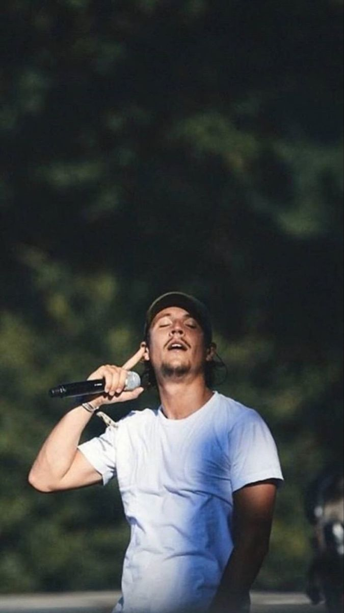
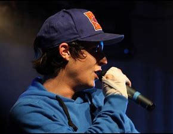

Biographie
Nekfeu démarre le rap en 2007. Il est successivement membre de différents groupes de rap comme S-Crew, 1995, 5 Majeur et d'un collectif appelé L’Entourage . Nekfeu s’est fait connaître grâce au succès de Rap Contenders, où deux MC s'affrontent au cours d'un duel a cappella. Un des duels de Nekfeu contre Logik Konstantine, lors des Rap Contenders, est particulièrement médiatisé.
Il a commencé avec le S-Crew en 2010. C'est après cela et plusieurs opens mics avec le S-Crew, 1995 et L'Entourage qu'il accroît sa notoriété sur la scène underground parisienne. En 2011, il sort le projet 5 Majeur avec son groupe du même nom, En sous-marin en duo avec Alpha Wann puis le premier EP du collectif 1995 (composé d'Alpha Wann, Sneazzy West, Areno Jaz, Fonky Flav' et DJ Lo' et Nekfeu lui-même) intitulé La Source. En 2012, il publie l'EP Métamorphose avec le S-Crew, avec 1995, un deuxième EP intitulé la suite pour ensuite sortir leur premier album Paris Sud Minute le 31 décembre 2012 avec lequel ils gagneront le prix du « Meilleur Album de Musiques Urbaines » aux Victoires de la musique. Au cours de cette même année, avec le S-Crew le premier album du groupe est intitulé Seine Zoo.
Courant 2014, avec L'Entourage, le premier album du collectif sort dans les bacs et est intitulé Jeunes Entrepreneurs. Il se bat pour la liberté d'expression. Nekfeu n'hésite pas à dire qu'il lit beaucoup et que c'est ce qui lui permet d'avoir beaucoup de vocabulaire pour faire ses textes. Le collectif L'Entourage est un des plus influents de la scène du rap français actuelle. S'étant fait connaître par le biais des Rap Contenders mais également par les réseaux sociaux et les open mics, ils ont sorti le 26 mai 2014 leur premier album Jeunes Entrepreneurs qui leur permet de remplir l'Olympia de Paris le 14 juin 2014. Le succès de cet album ainsi que ceux des différents projets des autres groupes de Nekfeu participe sans aucun doute à celui de Feu.